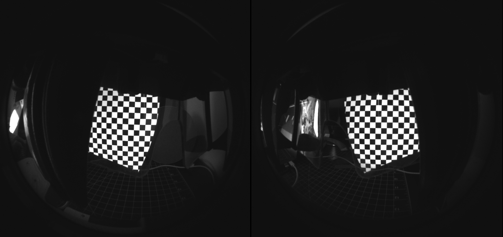

Calibration V2
This version of the calibration system allows you to calibrate your headset with a single stereo camera
These Modules require python 3 in order to work
Setup
- Download the Feat-Gen-2-software branch of the following repo: https://github.com/BryanChrisBrown/ProjectNorthStar/tree/feat-gen-2-software
- Setup python with the following dependencies:
- Pyrealsense2
- OpenCV2
- Numpy
- Print the calibration stand and intel realsense mount, the mount is friction based and requires no screws outside of the two m5 screws to mount the t265 itself.
Calibrating your headset
Run through the following steps to calibrate your headset.
Ensure that your headset is placed on the calibration stand, with the stand's camera looking through it where the users' eyes will be.
Additionally ensure that your headset is plugged in and displaying imagery from your desktop.
It helps to place a piece of cloth over the rig to shield the cameras + headset from ambient light.
Running this script will display a sequence of graycodes on your North Star, capturing them at the same time.
The sequence of binary codes will culminate in a 0-1 UV mapping, saved to ./WidthCalibration.png ./HeightCalibration.png in your main folder.
Running this script will fit a 3rd-Degree 2D Polynomial to the left and right "eye"'s X and Y distortions.
This polynomial will map from each display's 0-1 UV Coordinates to rectilinear coordinates (where a 3D ray direction is just (x, y, 1.0)).
When you are finished, you may paste the output of the calibrateGraycodes.py into this diagnostic shadertoy to check for alignment.
The shader toy should look like this when viewed through the headset

Additionally, there should be a NorthStarCalibration.json in this directory which you may use in the Unity implementation.